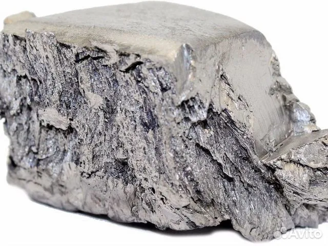

Тербий
Те́рбий (химический символ — Tb, от лат. Terbium) — химический элемент 3-й группы (по устаревшей классификации — побочной подгруппы третьей группы, IIIB) шестого периода периодической системы химических элементов Д.И. Менделеева с атомным номером 65. Название восходит к селению Иттербю в Швеции.Относится к семейству лантаноидов (иттриевая подгруппа). Как и любой лантаноид, тербий принадлежит к редкоземельным элементам и переходным металлам. Простое вещество тербий — мягкий металл серебристо-белого цвета.

В 1843 году шведский химик К. Г. Мосандер обнаружил примеси в концентрате Y2O3 и выделил из него три фракции: иттриевую, розовую terbia (которая содержала современный элемент эрбий) и бесцветную erbia (содержала элемент тербий, нерастворимый оксид тербия имеет коричневый оттенок). Из-за бесцветности erbia существование этого соединения долгое время подвергалось сомнению, также были перепутаны названия фракций. Тербий в исходном концентрате составлял около 1 %, однако этого было достаточно, чтобы придать ему желтоватый оттенок. Чистый тербий в начале XX века первым получил французский химик Жорж Урбэн, использовавший технологию ионного обмена.
Металл получают восстановлением TbF3 металлическим Са. Тербий и его соединения применяют для изготовления люминофоров, лазеров, полупроводниковых и магнетомеханических устройств, как компонент сплавов.